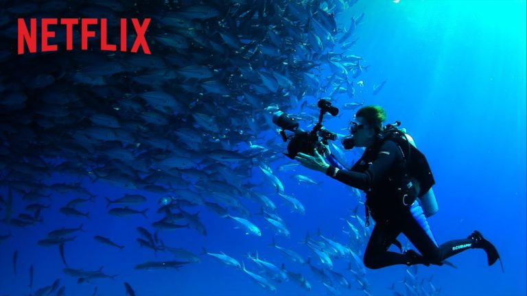
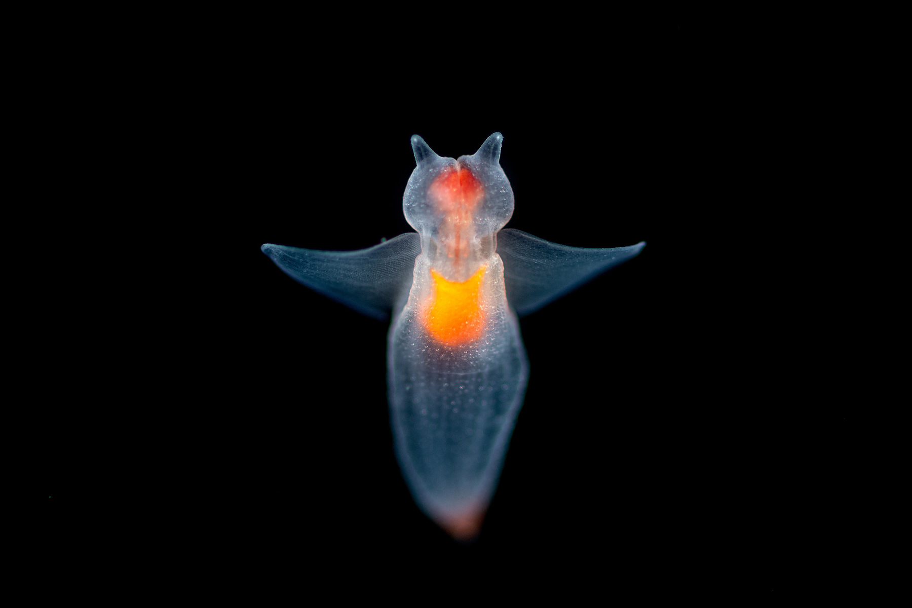
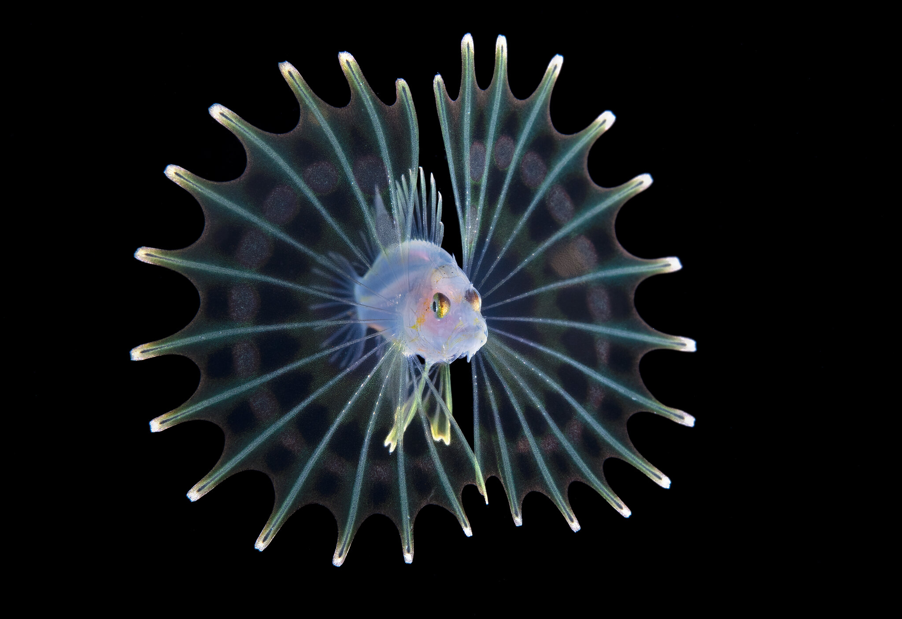

Deep Sea Dreaming

Welcome to Deep Sea Dreaming, your one stop resource to the fascinating mysteries of the deep sea. Blobfishes, brine pools, bioluminescent creatures, deep sea gigantism - we’ve got all those covered and more!
Featured Deep Sea Creature
Scaly Foot Gastropod
The world’s only iron-clad organism, the scaly foot gastropod lives deep near the hydrothermal vents of the Indian Ocean at approximately 3 kilometers beneath the surface. A testament to nature’s adaptability, this magnificent creature can chemosynthesize the normally toxic materials coming out of these vents and turn them into sustenance.

Follow Us!


“It’s that thing that explorers love to do which is to just get as far away from humanity as they can, in a way ironically that puts you more in touch with your own humanity”
- James Cameron
Watch Mission Blue now on Netflix!

Visit our Gallery!


Quick Links
Creatures
Atlantic Hagfish
Blobfish
Chambered Nautilus
Coelacanth
Deep Sea Anglerfish
Habitats
Brine Lakes
Canyons and Seamounts
Cold Seeps
Deep Sea Reefs
Hydrothermal Vents
Adaptations
Bioluminescence
Deep Sea Gigantism
Deep Sea Pressure
Feeding Strategies
Mating
Taking Action
Although the deep sea is largely inaccessible to us, it is not immune to our pollution. Chemical pollutants have been identified in deep sea octopus and squids from 1000m to 2000m below the surface. Additionally, improvements in technology has enabled humans to potentially mine for valuable resources near hydrothermal vents. These otherwise undisturbed ecosystem may suffer great damages as a result. You can make a difference.
Donate to us to support ocean conservation. We are partnered with the Deep Sea Conservation Coalition (DSSC) and are calling to protect the seabed from destructive mining and fisheries. With your support, we can ensure that safe regulations are put in place and practiced upon so that we can benefit and cause the least possible amount of destruction.